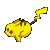
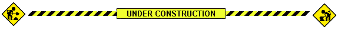

My Adventures
A journal to share all of my Pokémon catching adventures!
MAIN NAV:
Recipe
Story

Journal
This part of the website is currently under construction! Sorry!

Make sure to come back soon, so you can share your stories with me, too!